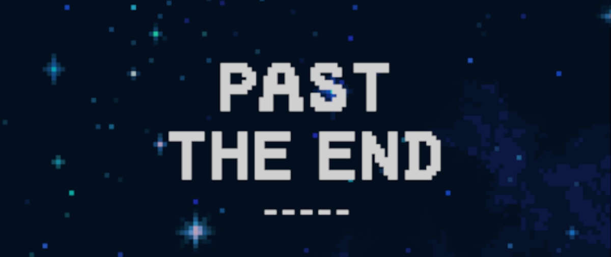
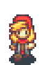
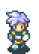
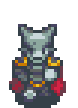
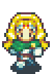
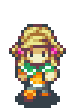
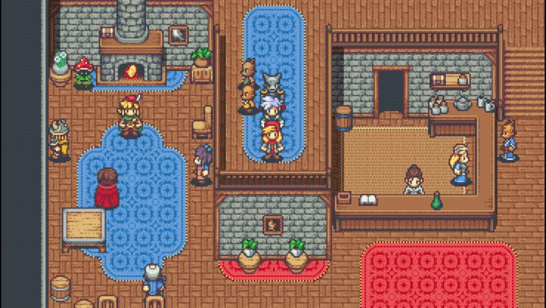
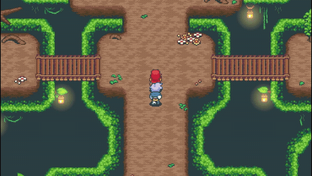
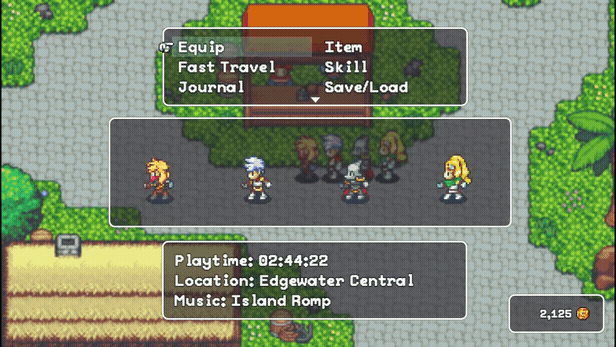
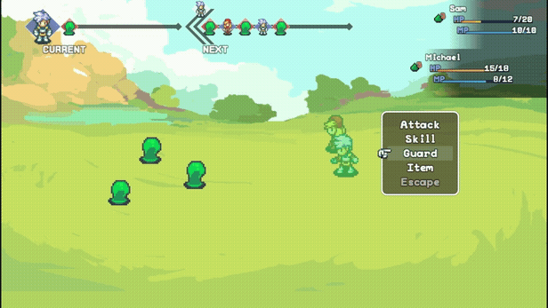

Past the End
A systems-driven narrative JRPG that explores player expression within an unfolding, inevitable ending. Built as an episodic experience across four chapters and a post-game epilogue, with the released content covering a complete opening arc.

Project Overview (TL;DR)
Role: Gameplay & Systems Designer, Narrative Designer, Writer, Event Scripter
Tools: RPG Maker MV (heavily extended), GIMP, custom plugins
Scope: Planned four chapters + post-game epilogue. Released: full Chapter 1 + half of Chapter 2.
What It Is: A narrative-driven JRPG about "destiny," where side stories and world state react to the player while the main narrative remains fixed and inevitable.
Design Focus: Authored encounters instead of random battles, exploration-driven progression, and absurdist themes expressed through systems rather than exposition.





Overview
Past the End is a narrative-driven JRPG designed as an episodic experience. The full project was scoped for four chapters and a post-game epilogue intended to let players wrap up side stories and see the long-term effects of their choices on the world.
The released content includes the complete first chapter and half of the second chapter, forming a self-contained opening arc that establishes the game’s world, systems, tone, and philosophical framing while hinting at future payoff.
Instead of relying on random encounters or grind-based progression, the game emphasizes handcrafted battles, dense exploration, and narrative reactivity. Every encounter, side quest, and map was authored with specific intent—mechanically, thematically, or both.
At the core of the project is a question: how can player agency remain meaningful when the overall narrative trajectory is fixed? Rather than branching main stories or multiple endings, Past the End focuses on local, contextual changes—what you do affects people, places, and moments along the way, even if the destination is inevitable.
Project Snapshot
Scope: Planned four chapters + post-game epilogue. Released: full Chapter 1 + half of Chapter 2.
Role: Gameplay Designer, Systems Designer, Narrative Designer
Timeline: ~18 months (active development)
Team: Small team
Platform: PC
Engine: RPG Maker MV (heavily extended)
Status: Public release of opening arc; full project currently on indefinite pause.
Design Goals
- Eliminate traditional JRPG grind and random encounters.
- Use handcrafted battles as a storytelling and teaching tool.
- Make exploration, curiosity, and side stories the primary drivers of power.
- Allow players to "break" the system and feel clever for doing so.
- Express absurdist themes through structure and mechanics, not exposition.
In-Game Moments
A few snapshots from the playable build that show how systems, exploration, and presentation come together in play.




Core Systems Design
Under the hood, Past the End is held together by a set of systems designed to support authored encounters and a reactive world.
- Encounter System: No random battles; each encounter is hand-authored with its own gimmick, teaching goal, or narrative purpose.
- World State Tracking: Towns and side stories use invisible flags and event scripts so NPCs, scenes, and environments react to past choices.
- Progression Without Levels: Permanent stat items ("Power Tabs") and equipment choices replace traditional experience grinding.
- Build Expression: Limited but meaningful skill lists, two accessory slots, and a spellbook slot let players shape party identity.
- Item-Forward Combat: One free item per turn per character encourages proactive combos rather than emergency-only usage.
Design Pillar 1: Handcrafted Encounters Over Randomization
Past the End contains no random battles. Every encounter is authored by hand with a specific purpose—teaching a mechanic, expressing character identity, reinforcing tone, or surprising the player with an encounter-specific gimmick.
Enemy groupings are treated as scenarios, not stat checks. Many fights introduce subtleties: status-heavy enemies that encourage item use, target-priority puzzles, or encounters that echo a story beat mechanically. Combat is used as a language, not filler.
Design Pillar 2: Meaningful Side Content With Lasting Impact
While the main narrative path remains fixed, side quests and optional interactions meaningfully affect the world. Completing (or ignoring) these threads changes NPC dialogue, environmental details, and how the world reacts to the player later.
These changes are not framed as “good” or “bad” endings. Instead, they reinforce the idea that meaning emerges from local, lived actions—who you helped, who you ignored, and what you chose to care about—rather than from branching plot diagrams.
Design Pillar 3: Philosophy Expressed Through Systems
The game is heavily influenced by absurdist philosophy: everyone is moving toward an ending, but what happens along the way still matters deeply. This is not delivered through speeches or monologues; it is encoded into structure and systems.
- The main story does not branch or change.
- Side stories do, and their effects persist.
- The world remembers what you did, even if the destination is fixed.
This creates a tension where the player cannot “escape” the end, but can still meaningfully shape experiences, relationships, and the state of the world. Philosophy is something you feel by playing, not something you are told.
Player Expression Through Exploration & Permanent Choice
Because there is no traditional leveling system and no grind-based XP, player power had to emerge from exploration, decision-making, and attention to the world. You cannot farm enemies for experience or gold; gold comes mostly from exploration and a few mini-games.
Nearly every map is densely interactive. Design rules of thumb:
- At least one treasure chest per map.
- At least three smaller “finds” (gold, consumables, stat items, etc.).
- Multiple objects that respond with either rewards or witty, in-character flavor text.
Players quickly learned that interacting with the environment was almost always worth it. Sometimes they received items or gold; other times they got a joke, a tone-setting line, or a bit of worldbuilding. Either way, curiosity was consistently rewarded.
Permanent Growth: Power Tabs Instead of Levels
To support progression without a level system, the game uses permanent stat-boosting items (“Power Tabs”), loosely inspired by Chrono Trigger. These provide irreversible increases to:
- HP / MP
- ATK / MAG
- DEF / RES
- SPD
Power Tabs are limited and discoverable, not farmable. This makes each one matter. A party’s growth reflects where the player explored, which side stories they followed, and what they valued, rather than how many battles they repeated.
Build Expression Through Narrative Reward & System Interplay
Characters do not start with a long list of abilities. Each begins with only two skills, and new abilities are unlocked gradually through narrative progression—up to seven total per character in the full design, and up to four in the released content.
To expand builds without overwhelming players, the game adds:
- Two accessory slots per character.
- A dedicated spellbook slot.
Spellbooks grant a single additional ability while equipped, essentially letting characters temporarily borrow tools outside their core identity. Most spellbooks are earned by completing side stories, so narrative engagement directly unlocks mechanical flexibility.
This creates a loop where:
- Side stories → reward Power Tabs and spellbooks.
- Power Tabs → shape core stats and party identity.
- Spellbooks → open situational, expressive builds.
Players who care about the world and its characters gain more interesting ways to play the game, not just bigger numbers.
Encouraging Creative Play Through Item Systems
One of the most impactful combat rules is simple: characters may use one item per turn without ending their action.
This small rule change reframes items from emergency buttons into proactive tactical tools. Players can:
- Set up status effects with items, then capitalize with skills.
- Chain defensive items into aggressive turns.
- Construct repeatable “mini-combos” inside a single round.
Some players quickly learned to “break” encounters using these interactions—which was treated as a design success, not a failure. To encourage this further, some items were later designed to guarantee status effects (for example, always applying burn), pairing naturally with skills that deal bonus damage to afflicted enemies.
The goal was not perfect balance, but expressive mastery: if you understand the system deeply, you should be able to bend it in your favor.
Designing Within (and Beyond) Engine Constraints
Past the End was built in RPG Maker MV, an engine that strongly favors traditional random-encounter, level-based JRPGs. To support the game’s goals, I:
- Extended and configured multiple plugins to support bespoke mechanics.
- Used event systems and scripting to track world state and side-story consequences.
- Custom-tuned encounters and progression without relying on built-in level curves.
This required constantly balancing ambition against stability: pushing the engine far enough to serve the design without compromising performance or player comprehension.
Outcomes & Learnings
- Players interacted heavily with the environment, even when unsure of mechanical reward.
- Dense, compact maps sustained curiosity better than large, sparse spaces.
- Removing grind shifted focus toward discovery, planning, and expression.
- Allowing system "breakage" increased satisfaction and a sense of ownership.
- Philosophical themes landed more strongly when expressed through play rather than exposition.
What I Learned as a Designer
Past the End became the foundation of how I think about game design:
- Systems can quietly carry philosophical ideas without explicit exposition.
- Constraints (like RPG Maker's engine limits) can be leveraged rather than fought.
- Player agency doesn't require branching endings—world state and side stories can do the heavy lifting.
- Hand-authored encounters, when tightly scoped, are more memorable than endless random battles.
- Letting players "break" systems on purpose often creates the most meaningful memories.
Why This Project Matters
Past the End is my foundation as a gameplay designer: authored encounters, systems that carry meaning, and mechanics that exist in conversation with narrative themes. It also established my preference for dense worlds, expressive builds, and rules that invite players to be clever.
My later Unity work builds on the philosophy developed here—treating gameplay as a language for ideas, not just a delivery system for content.
Learn More or Collaborate
If you’d like to dig into specific encounters, systems, or prototypes, I’m happy to talk through the design in more detail.
Contact